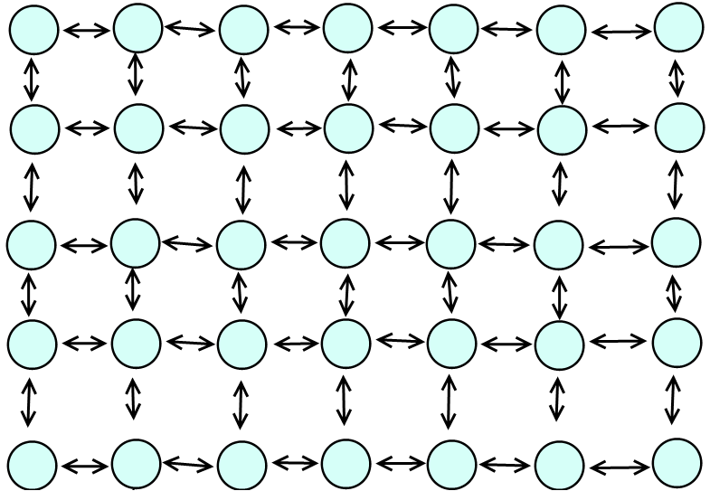

Randomized Spanning Tree Mazes.
418 Final Project
Members : Bryce Summers (bwsummer)
Brandon Lum (jiajunbl)
More Information
Short Summary
We are implementing an algorithm that constructs a randomized spanning tree from a set of vertices and potential edges that could connect them.
Another way of describing our algorithm, is that we take a complete graph and construct a random subgraph from it that is a spanning tree.
Our algorithm relies on the use of a Union Find data structure to keep track of the connected regions in order to prevent the introduction of
cycles that would invalidate the acyclicness of our constructed trees.
We have implemented several Union Find Data Structures including: a serial one, a global lock based one, a per node based locking one, and several lock-free based structures.
We have been investigating the performance of the algorithm using combinations of the Union Find implementations and several parameters, such as the number of nodes, density of the graph nodes, contention between planar conflicts, and the parrallelization thread count.
Example Result
Here is a visual representation of the 2D Lattice full maze space that we have been using as an example of a relatively sparse maze.

An example of a result we will be sharing in our presentation is that for a 2D Lattice maze of size 100 by 100, our algorithm performs faster in serial than when run in parallel using 4 threads and a lock free union find structure with no path compression.
In contrast, the lock free structure is faster than the serial implementation for 400 by 400 mazes.
We will be discussing several important features of the performance of our algorithm, including overhead costs, cache locality, and contention between threads.
Latest Result : Using 8 threads, we are getting a 2x speedup for both sparse and dense graphs using our lock-free union find implementation with no path compression. Our lock free implementation using path compression is slightly slower.
Our implementations using locks are not competitive. We are happy to be getting a 2x speedup for a parallelization that requires minimal structured changes from the straight forward serial implementation.